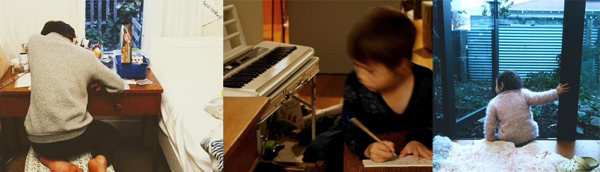
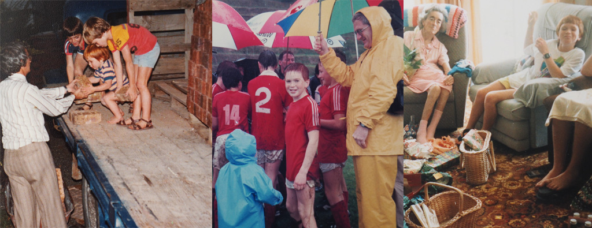
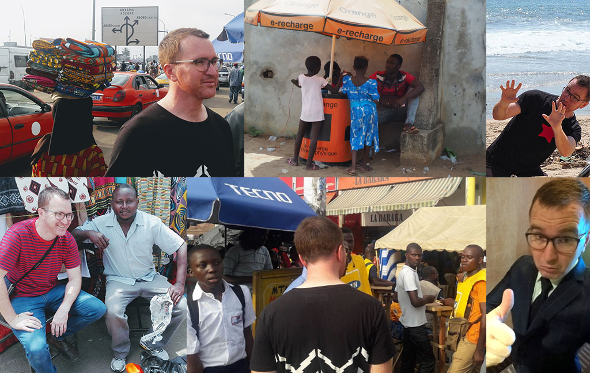
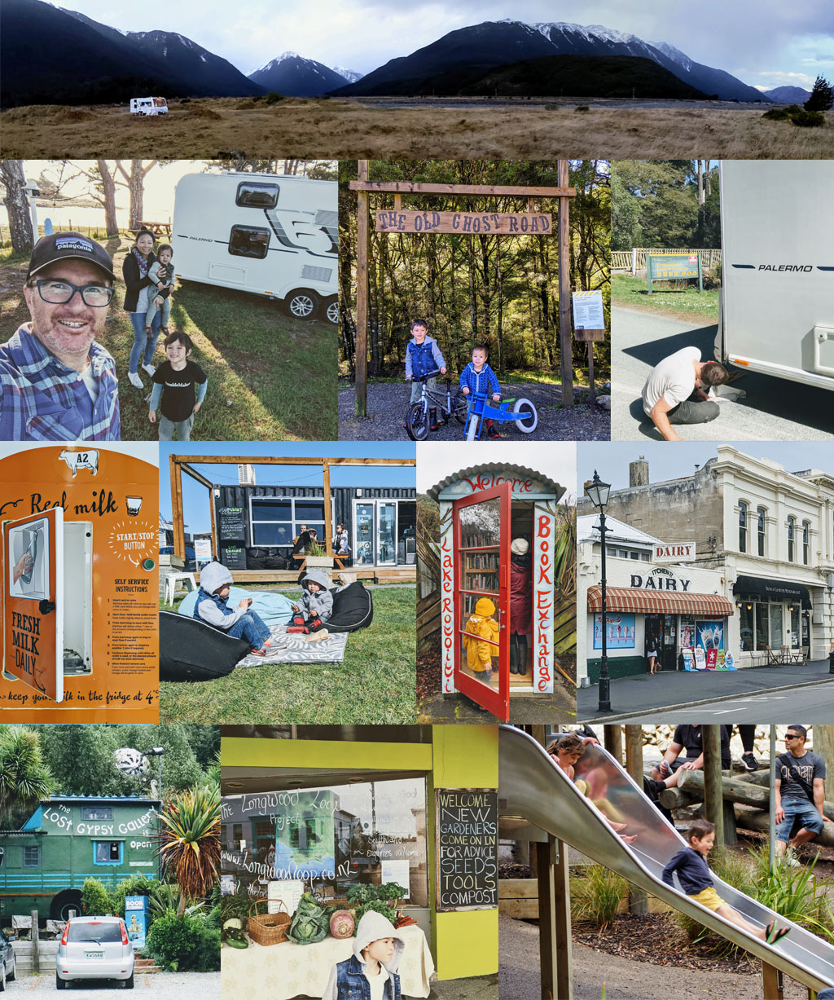
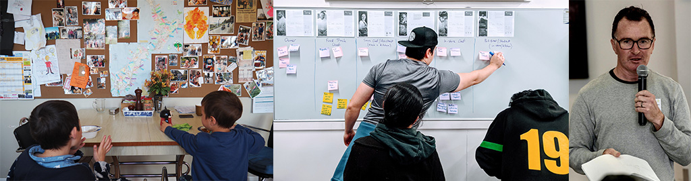
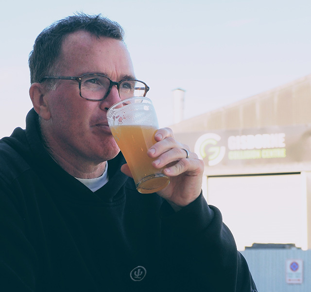

Heart on sleeve, head screwed on
We should vote for values and competence eh? Because, try as we might, you just don't know every decision we're asked to make.
If you can see how the values and competence in my story take us in the right direction, please give a vote to me, Ian Allan.
Enthusiasm and lived experience
At 48, I bring the right balance of enthusiasm and lived experience.
After a storied professional career  I now sit between three young children (10, 7, and 2) and elderly parents.
I now sit between three young children (10, 7, and 2) and elderly parents.
My decision-making is for our rangatahi, to give peace-of-mind to our elderly.

Compassion, sacrifice, hard work
Born and raised here by proud parents Derek and Moira-Jean, I'm rooted in compassion, sacrifice, and hard work.

If watching my father run J.S. Allan's didn't instil it, maybe it was us just doing things that needed doing for others; from stocking helicopters during Bola, stacking wood, reflecting in church, fixing instead of replacing, to representing "Poverty Bay".
Fairness, care, high expectations
After dux at college and a bloody hard degree in computing and mathematical sciences, my early working years were alongside teachers. It has shaped my deepest political value: fairness.
Combining a fair go, high expectations, and supporting those in our care to go beyond the possible is what it's all about.

Loyalty, strategic thinking, commercial acumen
I shifted gear into a wild private-sector career in technology, working with hi-tech capital-intensive startups and colossal mobile operators, banks, and conglomerates across Africa and South-east Asia.
With mad loyalty, I have produced solutions to hard problems in the toughest corners of the world for the most under-served communities.

These solutions were packaged, pitched, and proposed with deep stakeholder understanding, resourcefulness, commercial ingenuity, and strategic thinking.
My skills preparing commercial deals with revenue sharing, incentivised efficiency, forward investment, and shared risk neatly apply to meaty problems at the council table.
You can dig into the detail on my LinkedIn  .
.
Keen observer and listener
My success as a keen observer and listener in my professional career continued when we lived on the road throughout New Zealand for a year in a family caravan.
I'm not partisan; good ideas can come from anywhere.

I've seen where it can be done better: from leveraging strengths, to cycle paths, to hubs for resource re-use.
Higher learning
About four years ago we returned to Gisborne with our children. In that time I've had the privilege of using my professional experience to guide local adult learners from all walks of life.
Being isolated makes us a bit special out here. Local industries love hiring dedicated local experts — imports don't often get the vibe of the place — but we need to train a lot more of them.

I have become a staunch advocate for keeping and growing strong higher education pathways here.
Radical common sense
To round things off, here's how I see the world; the things that deep down you probably know to be true but the incentives in the system, and what you're told isn't possible, makes you try to believe otherwise:
- Critical thinking means being the most critical of your own thinking.
- The economy is a subset of our environment.
- Biodiversity loss really matters.
- Negative externalities need to be built into the cost.
- Our economic system is not only making most families poorer, but it's making our governments poorer too; if we don't blunt the hard edges it will just get worse and worse.
- The pursuit of things never satisfies, but it's hard to know when it's enough.
- Social media and gaming are net-negatives to society and we must break free.
- I'm Tangata Tiriti; I belong here because of te Tiriti o Waitangi.
So that's some of me
If you made it this far, thank you! Which means there's only one thing left to do:
Please give me, Ian Allan, your vote to represent our shared values on the Gisborne District Council!